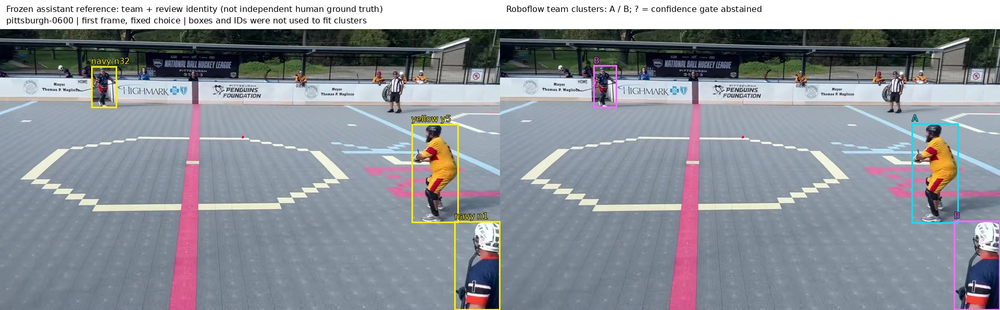
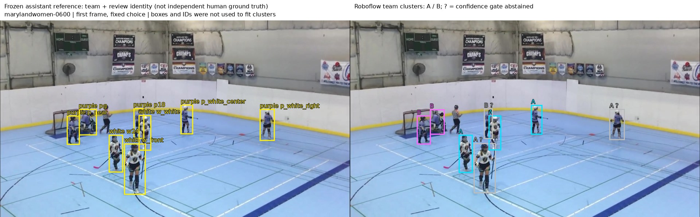

New: comparison on two unused NBHL recordings →
Roboflow replacement test
October 25, 2026 · NBHL ball hockey · Actual upstream Sports, Trackers and RF-DETR code, run on Modal.
We implemented Roboflow alternatives for detection, tracking, team clustering, ball selection and coordinate projection. The development-selected RF-DETR + Roboflow tracker recovered 72/129 reviewed same-player connections with 3 known wrong merges. The existing pipeline recovered 111/129 with zero known wrong merges.
These results support replacing individual utilities and offering a simpler tracking alternative. They do not support replacing the complete identity and statistics pipeline.
Watch the complete five-minute Roboflow replay · Maryland comparison
What can be replaced?
| Stage | Result | What remains |
|---|---|---|
| Player detection | Implemented | RF-DETR uses our existing NBHL-trained checkpoint. No new weight training in this experiment. |
| Local tracking | Implemented alternative | Five upstream tracker implementations tested with both detectors. Scene resets and current-detection-only output remain in our adapter. |
| Team assignment | Partial | Sports TeamClassifier works well on Pittsburgh; it fails on many Maryland observations, including confident assignments. |
| Rink projection | Replaceable utility | ViewTransformer matches the existing relative transform. Rink landmark detection, camera registration and physical calibration remain custom. |
| Ball tracking | No measured improvement | Sports BallTracker ties the top-confidence detector control on the reviewed visible-ball frames. |
| Jersey identity and reconnecting | Still custom | The hybrid keeps OSNet and our global linker. Repeated number readings still make mistakes. |
| TOI, miles, shots, goals, assists, possession | Unverified | These components do not establish reliable full-game identities or game statistics. |
Player tracking
Four 30-second clips plus a five-minute clip: 6,300 frames from Pittsburgh and Maryland women. Correct connections join reviewed observations of the same player; wrong merges join different players. Unverified joins have uncertain reference identity. The reference is sparse and assistant-reviewed, with no independent human verification.
| Method | Correct connections | Wrong merges | Unverified joins | Matched observations |
|---|---|---|---|---|
| Existing SAM2 + OSNet + Qwen | 111 / 129 | 0 / 1330 | 4 | 222 / 233 |
| RF-DETR + Roboflow BoT-SORT | 72 / 129 | 3 / 1330 | 0 | 221 / 233 |
| RF-DETR + Sports ByteTrack | 33 / 129 | 8 / 1330 | 0 | 186 / 233 |
| YOLO + Roboflow BoT-SORT | 69 / 129 | 4 / 1330 | 0 | 223 / 233 |
| YOLO + Sports ByteTrack | 29 / 129 | 5 / 1330 | 0 | 184 / 233 |
| YOLO + Roboflow BoT-SORT + existing OSNet links | 94 / 129 | 14 / 1330 | 3 | 223 / 233 |
The hybrid replaces SAM2 with YOLO + Roboflow BoT-SORT and then uses our unchanged generic OSNet body-region descriptors and global appearance linker. It recovered 94/129 connections with 14 wrong merges. It does not include Qwen embeddings, and is not an all-Roboflow pipeline.
Selection, implementations and timing
Twenty configurations: two detectors × five tracker implementations × two buffer settings. Selection used six Massachusetts development clips (3,300 frames), excluding other leagues, before scoring the five regression clips. The development identity reference is small: 90 observations, 22 known same-player pairs and 46 known different-player pairs. The recordings had already been used in earlier work, so this is reused regression rather than a new untouched test.
The five implementations are the original Sports tutorial’s Supervision ByteTrack plus Roboflow Trackers’ ByteTrack, OC-SORT, C-BIoU and BoT-SORT. Native defaults use the actual 15 fps; the second profile keeps lost tracks for four seconds. BoT-SORT receives image frames for camera-motion compensation. All displayed positions are current detector boxes; the adapter emits no extrapolated off-camera positions.
RF-DETR is our previously trained medium/960 NBHL checkpoint. The detector and tracker environments are separate because current RF-DETR requires a newer Supervision release than the original tutorial’s ByteTrack. No new language-model calls or model fine-tuning were used.
| Detector | Development-selected tracker | Correct | Wrong |
|---|---|---|---|
| yolo_cached | YOLO + Roboflow BoT-SORT | 10 | 1 |
| rfdetr_nbhl | RF-DETR + Roboflow BoT-SORT | 9 | 2 |
Recorded tracker timings exclude detector inference and cached appearance extraction. They are not an end-to-end speedup claim. All 20 development results · Versions and source hashes
Team classification
The actual Sports TeamClassifier uses SigLIP image features, UMAP and two-cluster KMeans. Each recording supplies up to 512 unlabeled automatic player crops. Team labels are used only to align the cluster names for scoring. The evaluation footage contributes unlabeled fitting samples.
| Recording | Input | Correct / matched | Correct / accepted | Abstained | Detector missed |
|---|---|---|---|---|---|
| Pittsburgh | Stock full-box crop | 136 / 147 | 135 / 138 | 9 | 7 |
| Maryland women | Stock full-box crop | 38 / 75 | 30 / 58 | 17 | 4 |
| Pittsburgh | Torso crop follow-up | 146 / 147 | 130 / 131 | 16 | 7 |
| Maryland women | Torso crop follow-up | 43 / 75 | 42 / 68 | 7 | 4 |
The confidence gate uses a fixed cluster-distance margin and the training-distance 95th percentile. Its errors show that cluster confidence is not a reliable guarantee. The torso crop was declared after seeing the stock classifier’s failure; it is a follow-up on reused data, not independent validation.
Compare team predictions with the frozen reference
Fixed first frames, without cherry-picking. Left: yellow reference boxes, team and review identity. These are sparse checks; unlabeled players are not negatives. Right: stock Roboflow clusters A/B; gray “?” means the confidence gate abstained. Cluster labels are not jersey numbers.


Ball, jerseys and rink coordinates
Sports BallTracker and the highest-confidence detection control each located 85/108 reviewed visible balls, including 11/16 validation observations. Both abstained on 23. Unknown-visibility frames were excluded from scoring; these correlated short windows do not validate shots or possession.
Applying the tutorial-style three-consecutive-reading rule to archived VLM number readings gave 30 correct, three wrong and three abstentions on 36 readable central crops. Thirteen readings on 61 unknown crops remain unverified. This exercised a consensus rule, not a new Roboflow number detector or OCR model.
ViewTransformer reproduced the existing four-point relative rink projection within 0.00001 relative units. This checks software compatibility only. Venue dimensions remain unverified, so miles and speed remain disabled.
Evidence and source
Tracking results · Stock teams · Torso follow-up · Utility results · Protocols and reproduction code
Upstream: Roboflow Sports, Roboflow Trackers, RF-DETR. Weights and raw recordings are not redistributed.